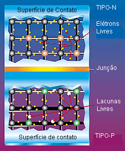

Como
Funciona
Como a Célula
Fotovoltaica Funciona

O efeito
fotovoltaico � o processo f�sico pelo qual uma c�lula fotovoltaica converte
luz solar em eletricidade. A luz solar � composta de f�tons, ou part�culas
de energia solar. Estes f�tons cont�m grande quantidade de energia, correspondente
aos diferentes comprimentos de onda do espectro solar. Quando os f�tons colidem
com uma c�lula fotovoltaica, eles podem ser refletidos ou absorvidos, ou mesmo
atravessar direto a c�lula. Somente os f�tons absorvidos geram eletricidade.
Quando isto acontece, � transferida a energia do f�ton a um el�tron em um
�tomo da c�lula (que � de fato um semicondutor). Com essa nova energia, o
el�tron sai de sua posi��o original no �tomo para tornar parte da corrente,
em um circuito el�trico. Deixando sua posi��o inicial, o el�tron deixa uma
"lacuna" para que outro el�tron a ocupe. Propriedades especiais
da c�lulas fotovoltaica (um campo el�trico nela embutido) fazem com que a
correte produza uma DDP para que haja corrente em uma carga externa (como
uma l�mpada incandescente, por exemplo).
| Átomo de Silício |
Faixa de condução |
O Átomo de Silício
 Toda a
mat�ria � composta de �tomos. At�mos, por sua vez, s�o compostos de pr�tons
positivamente carregados, el�trons negativamente carregados e neutrons,
neutros. O n�mero igual de el�trons e protons torna um �tomo eletricamente
neutro. A energia de cada el�tron depende de sua �rbita. El�trons mais afastados
do n�cleo possuem mais energia que os el�trons mais pr�ximos do n�cleo.
O �tomo de sil�cio tem 14 el�trons, por�m, somente os 4 �ltimos da camada
de val�ncia podem ser compartilhados. Estes quatro �ltimos el�trons apresentam
um papel importante no efeito fotovoltaico.
Toda a
mat�ria � composta de �tomos. At�mos, por sua vez, s�o compostos de pr�tons
positivamente carregados, el�trons negativamente carregados e neutrons,
neutros. O n�mero igual de el�trons e protons torna um �tomo eletricamente
neutro. A energia de cada el�tron depende de sua �rbita. El�trons mais afastados
do n�cleo possuem mais energia que os el�trons mais pr�ximos do n�cleo.
O �tomo de sil�cio tem 14 el�trons, por�m, somente os 4 �ltimos da camada
de val�ncia podem ser compartilhados. Estes quatro �ltimos el�trons apresentam
um papel importante no efeito fotovoltaico.
Semicondutor
tipo-N, tipo-P e o Campo El�trico

Para induzir
o campo el�trico dentro de uma c�lula fotovoltaica, s�o intercalados dois
semicondutores separados. O "tipo N" e o "tipo P".
Embora ambos os materiais sejam eletricamente neutros, o sil�cio tipo-n
tem el�trons em excesso e o tipo-p tem lacunas em excesso. Intercalando
estes, cria-se uma jun��o P-N e cria-se um campo el�trico deste modo.
Quando estes
dois semicondutores s�o intercalados, os el�trons em excesso do tipo-n
fluem para o semicondutor do tipo-p, e os el�trons que deixaram o tipo-n
criam ent�o lacunas no mesmo. (O conceito de uma lacuna mover-se � como
o de uma bolha em um l�quido. Embora seja o l�quido quem esteja se movendo
de fato, � mais f�cil descrever o movimento da bolha). Pelo fluxo de el�trons
lacunas, os dois semicondutores agem como uma bateria e criam um campo
el�trico na jun��o P-N. � este campo que fazem os el�trons saltar para
a superf�cie e os faz dispon�veis para o circuito el�trico. No mesmo instante,
as lacunas se movem para a dire��o oposta, para a superf�cie positiva
onde elas esperam el�trons livres.
A Faixa de Condu��o
Nem todos os fotons
da luz solar que entram na c�lula fotovoltaica possuem um n�vel de energia suficiente
para deixar el�trons livres dentro da c�lula e gerar corrente el�trica. Este
n�vel de energia, conhecido como "band-gap" � a energia necess�r
para quebrar liga��o covalente do el�tron e permitir que ele fa�a parte de um
circuito el�trico (corrente). Fotons com quantidade de energia maior que a da
nd-gap podem gastar energia extra em forma de calor. Assim, � importante que
uma c�lula fotovoltaica esteja ajustada (por modifica��es leves na estrutura
da mol�cula do metal semicondutor) de modo a maximizar a energia do foton. Afinal,
uma chave para obter um c�lula eficiente � converter o m�ximo de energia luminosa
em energia el�trica.

Semicondutores usando
em c�lulas fotovoltaicas tem energia band-gap que varia na ordem de 1.0 a 1.6
el�tron-volt (eV). Isto devido ao fato que esta faixa de eV � a ideal para que
n�o haja grandes perdas de calor. Por exemplo, a energia de band-gap do sil�cio
cristalino � de 1,1 eV.
A energia do foton
luz, tamb�m medida em eV, varia de acordo com os comprimentos de onda diferentes
da luz. O espectro inteiro de luz solar, de infra-vermelho para ultravioleta,
tem um alcance de cerca de 0.5 eV para aproximadamente 2.9 eV. Por exemplo,
a luz vermelha tem uma energia de cerca de 1.7 eV, e a luz azul tem uma energia
de cerca de 2.7 eV. Aproximadamente 55% da energia de luz solar n�o podem ser
ados pela maioria das c�lulas fotovoltaicas.
A Efici�ncia da Convers�o
A efici�ncia
da convers�o luz/eletricidade de uma
c�lula fotovoltaica � a propor��o de energia de luz solar que a c�lula converte
a energia el�trica. Isto � muito importante quando discutivos dispositivos fotovoltaicos,
porque melhorando esta efici�ncia podemos fazer com que estes dispositivos tornem-
mais competitivos com as demais es de energia.. Naturalmente , se um painel
solar efente pode prover tanta energia quanto dois pain�is menos eficientes,
ent�o o custo daquela energia ser� reduzido. bvio que do outro lado desta
equa��o est� o dinheiro gasto para a fabrica��o.
Absorção e Condução
Em uma c�lula
fotovoltaica, os f�tons s�o absorvidos pela parte "P" do semicondutor.
� muito importante "afinarmos" o semicondutor tipo-p com as propriedades
do f�tons que ir�o entrar na c�lula afim de "livrar-mos" o m�ximo
de el�trons poss�veis. Outro desafio � impedir que os el�trons se encontre com as lacunas e se recombinem antes deles "escaparem" da c�lula.
Para impr isto, projetamos o material de forma que os el�trons sejam "liberados"
o mais pr�ximo poss�vel da jun��o, de forma que o campo el�trico possa ajudar
a envi�-los para a parte tipo-p e para fora do circuito el�trico. Maximizando
todas estar caracter�sticas, n�s melhoramos a efici�ncia de convers�o da cela
de PV.
Para fazer
uma c�lula solar eficiente, tentamos maximizar a absor��o, minimizando a reflex�o
e recombina��o, e assim maximizamos a condu��o.